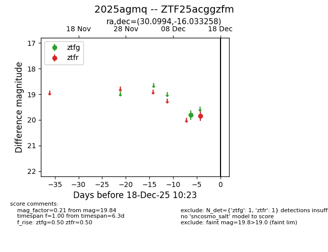
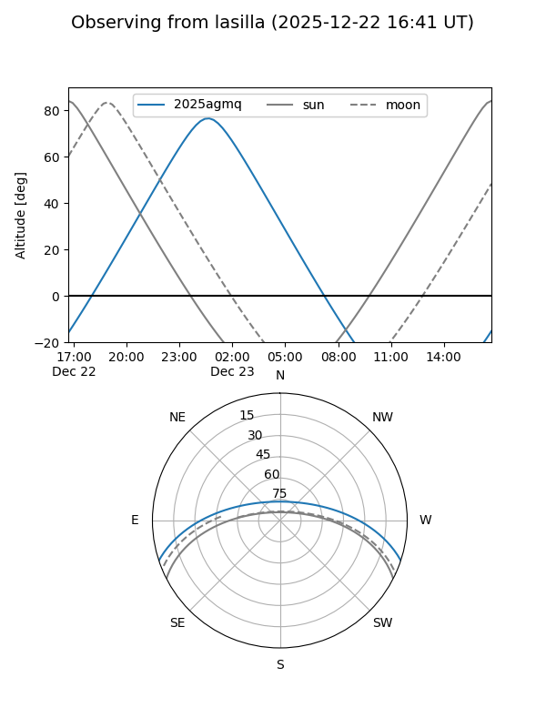
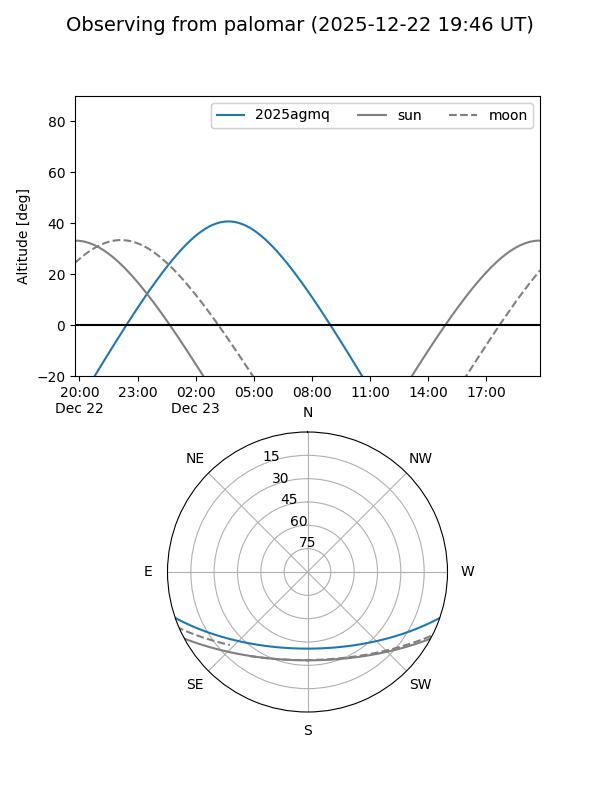

2025agmq
Target 2025agmq at 2026-01-09 12:49
Aliases and brokers:
FINK: link
Lasair: link
ALeRCE: link
TNS: link
YSE: link
alt names
ZTF25acggzfm (ztf,fink_ztf)
2025agmq (tns,yse)
Coordinates:
equatorial (ra, dec) = 30.0994,-16.03326
equatorial (HMS+DMS) = 02:00:23.87,-16:01:59.73
galactic (l, b) = (181.6969,-70.54086)
Flags:
Photometry:
last ztfg=19.81, ztfr=19.74
1 ztfg, 2 ztfr detections
Lightcurve

Visibility


Additional plots